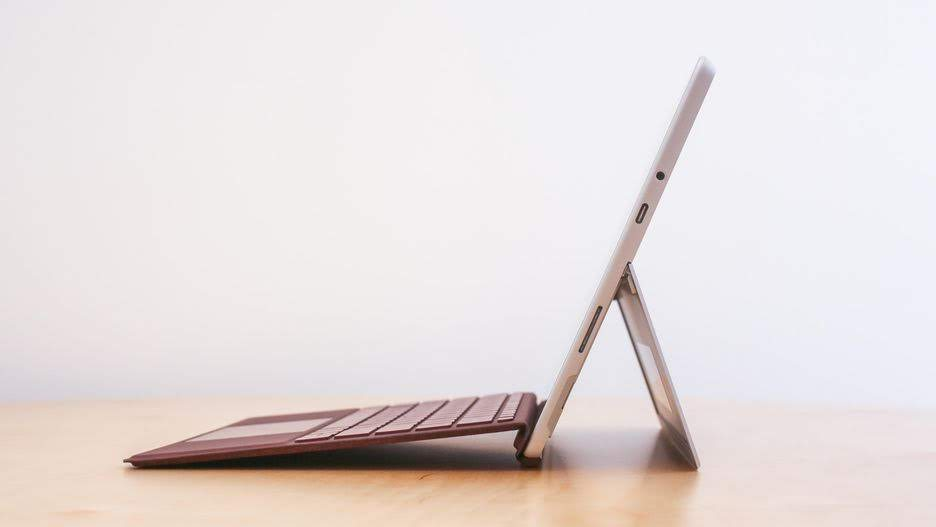
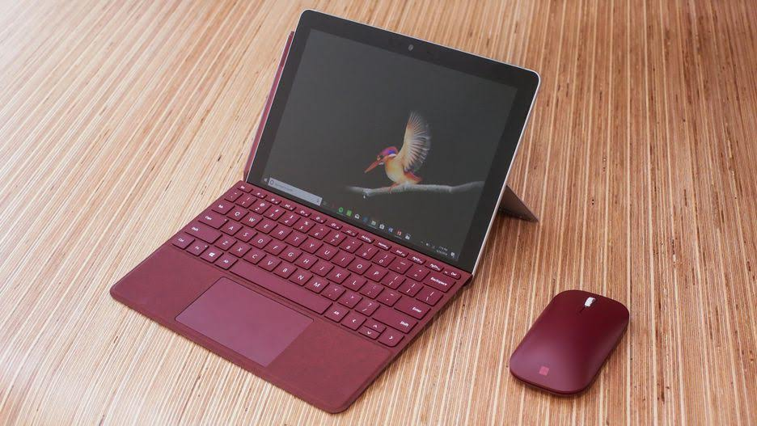

Technology
Microsoft Surface Go
 
Microsoft have just anounced the Surface Go it is an 10 inch tablet that
competes with the ipad air. it also targets students and it is ment for
education and word prossesing or web browsing it does have a decent CPU
with no fan and it has an option between 4gb RAM and 64gb eMMC storage or
8gb RAM and 128gb SSD storage. how ever they are going to launch a LTE
version and a 256gb configuration soon. compared to the ipad it has a
better CPU more RAM and more ports. the ipad starts at $329 compared
to $400 for the Surface Go. For the surface you are also getting a more
capable os but 1 issue is that it is windows 10 s so you can't download
apps outside the store.you also have to keep in mind that to get the
keyboard cover you need to add another $100. I think for the avarage
person this is really good but don't plan to game or to do heavy tasks on
it. it does have a USB C 3.1 and the Microsoft charger/dock port as well
as a headphone jack and a micro SD slot.